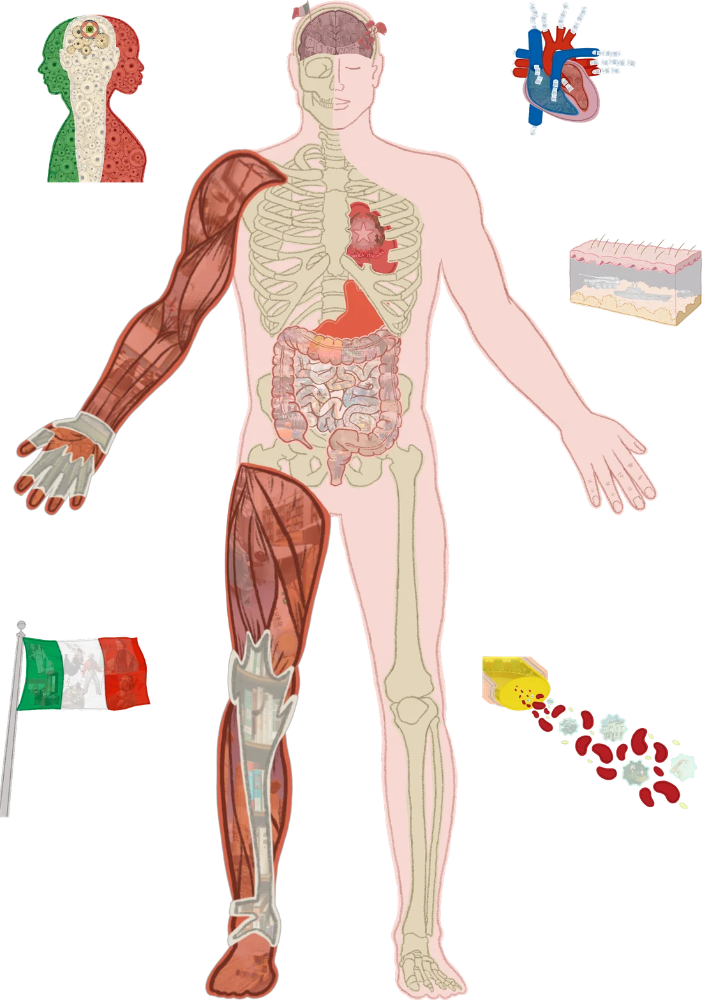
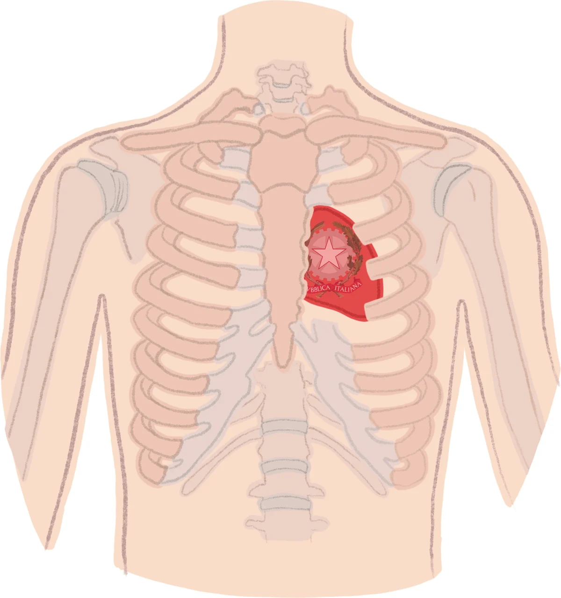
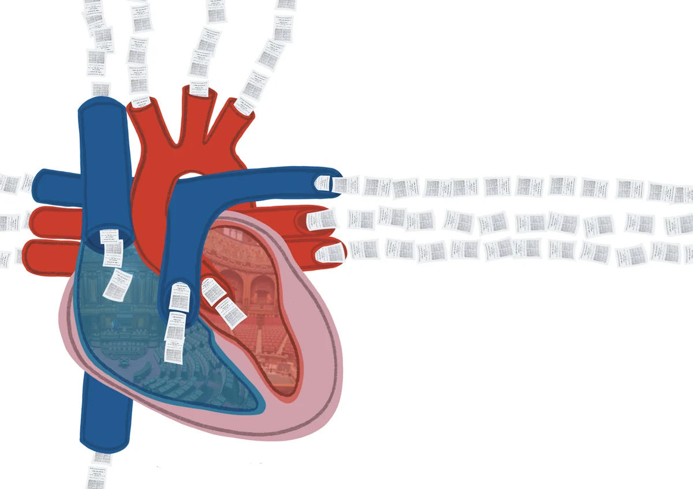
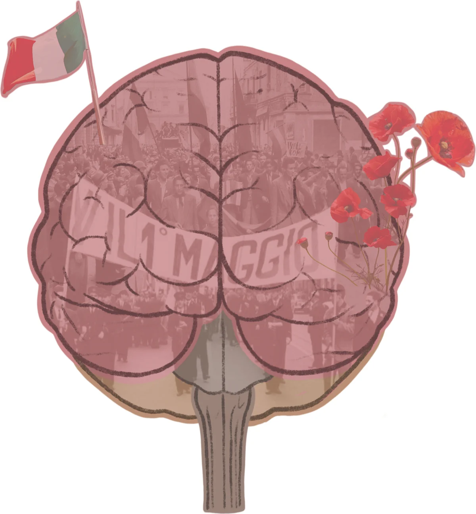
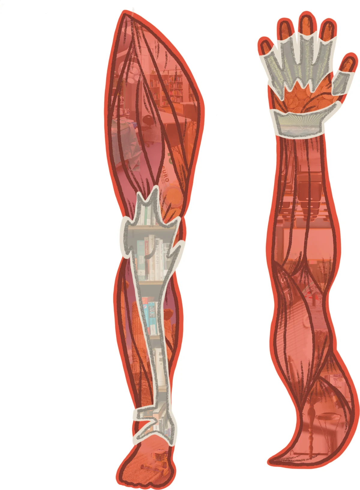
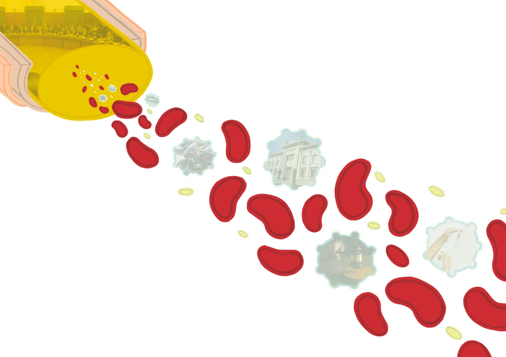
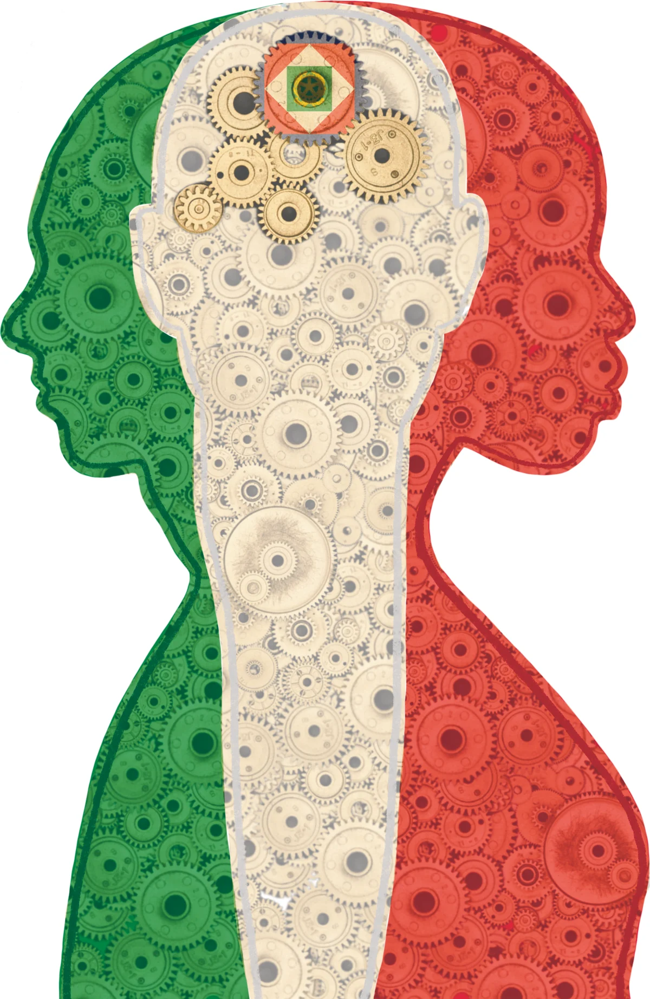
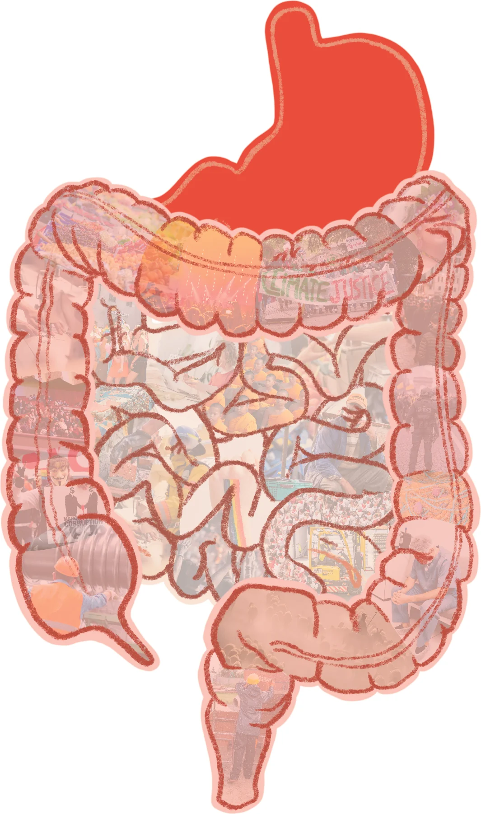
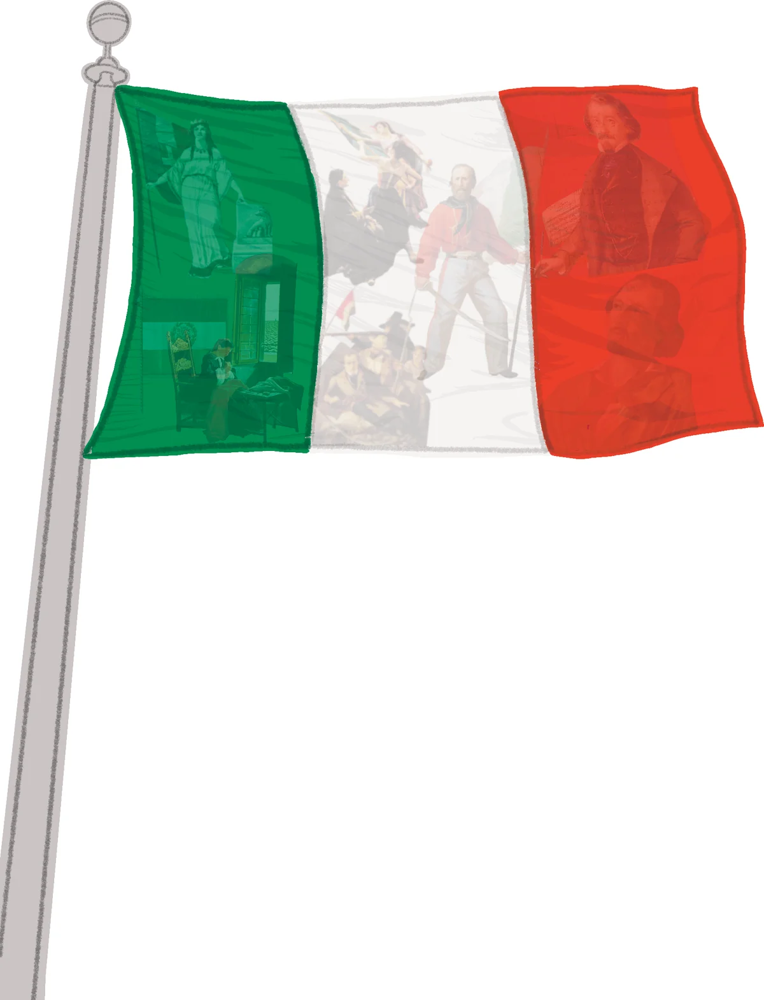

Lo spettacolo
Circa un'ora di lezione-spettacolo con filmati, immagini, suoni e ragazzi chiamati sul palco. In scena un solo interprete, nei panni del medico internista.
Tutto sullo spettacoloL'educazione civica che non ti aspetti
Un medico internista fa il check-up allo Stato italiano. Lo spettacolo e il libro portano la Costituzione nelle scuole medie e superiori, con il corpo umano come mappa.

Ai ragazzi la Costituzione di solito arriva come un elenco di articoli. Qui arriva come un corpo: lo scheletro che tiene in piedi lo Stato, il cuore che pompa democrazia, il cervello che decide, il sistema immunitario che lo difende.
Chi ha capito come funziona un corpo può capire come funziona una Repubblica. Con un linguaggio da ragazzi, qualche risata e nessuna lezione frontale.
Ogni organo del corpo ha il suo corrispettivo nelle istituzioni. Scegli un organo e leggi il referto.

Fa stare in piedi lo Stato, gli dà forma e protegge gli organi delicati. Ha 139 ossa, una per ogni articolo. L'ultimo, l'articolo 139, è la gabbia toracica che protegge il cuore dello Stato.

Due Camere che pompano democrazia. Una legge passa dall'una all'altra come il sangue nel cuore, finché esce senza modifiche. E come ogni cuore, nessuno può impedirgli di battere.

Raccoglie i segnali che arrivano dal resto del corpo, li interpreta e decide un piano d'azione. Coordina i movimenti volontari dello Stato.

Braccia e gambe fanno un milione di cose, ma vanno tenute allenate e messe in condizione di lavorare. Quando si fermano, si ferma lo Stato.

Come i globuli bianchi, il sistema giudiziario difende il corpo dello Stato da ciò che lo minaccia.

La coscienza dello Stato. Ne rappresenta l'unità, firma le leggi ed è il custode della Costituzione. È la vocina che ti dice: guarda che poi te ne penti.

Siamo tutti noi. Quando l'intestino sta male, l'umore dell'intero corpo ne risente.
Mamma Europa e tutti i suoi figli. L'Italia è uno di loro.
Circa un'ora di lezione-spettacolo con filmati, immagini, suoni e ragazzi chiamati sul palco. In scena un solo interprete, nei panni del medico internista.
Tutto sullo spettacolo
Illustrato da Maurizio Dondi e composto con un carattere ad alta leggibilità. Racconta gli organi dello Stato e contiene il testo integrale della Costituzione, dall'articolo 1 al 139.
Tutto sul libroLa Stampa, edizione di Asti, 20 novembre 2019La Costituzione raccontata ai ragazzi con un linguaggio ironico e leggero, ma mai banale.
Al Teatro Alfieri lo spettacolo ha accompagnato il battesimo civico di 132 neo diciottenni. Leggi la storia del progetto

Scrivici la data che hai in mente e di cosa dispone la scuola. Ti rispondiamo con disponibilità e requisiti tecnici.